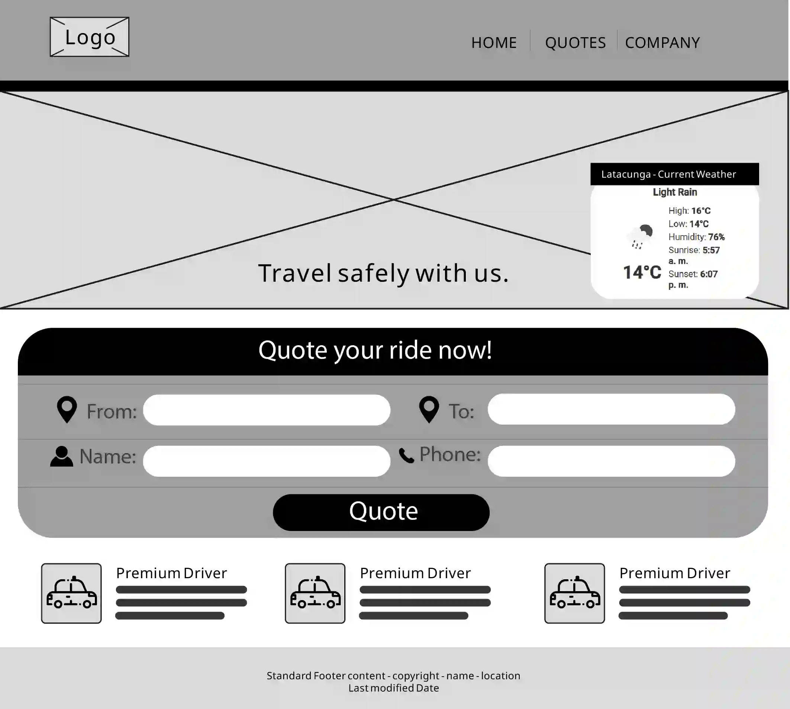
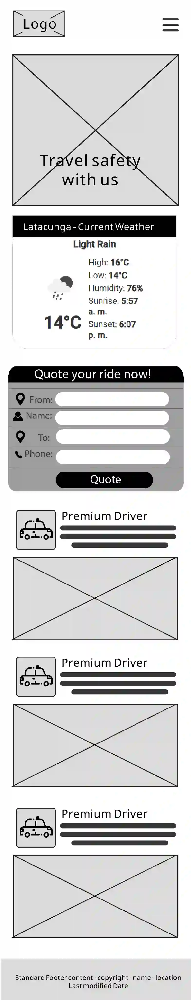

Site Name & Rationale
Site Name: Latacunga Quotes
Rationale: This name combines the location (Latacunga) with the site's primary function (Quotation) into a short, memorable, and descriptive title. It is direct and professional.
Logo and Branding
The logo will be simple, modern, and easily recognizable, likely featuring a stylized taxi or location pin, using the primary yellow and black color scheme.
Site Purpose
The site's primary purpose is to provide a **transparent, reliable, and real-time utility** for customers to obtain estimated fare quotes for taxi services in the Latacunga region. It will resolve the current lack of cost visibility by consuming external distance APIs and presenting the results alongside the cooperative's available fleet.
Target Audience Scenarios (2+)
These questions represent the target audience's needs and drive the site's content:
- How much will a ride from the terminal to the historic center of Latacunga cost right now? (Addressed on the Quotation Page)
- What types of vehicles (e.g., standard, executive) are available in the cooperative's fleet? (Addressed by the Featured Fleet section using JSON data)
Color Scheme
The selected scheme uses a high-contrast, professional, and energetic palette:
- Primary Text / Background:
#222323(Dark Black/Gray). Used for headings, body text, and footer background. Provides strong contrast on white. - Accent / CTA:
#FFD000(Bright Yellow). Used for primary call-to-action buttons (CTA), active links, and visual accents, conveying energy and urgency. - Background:
#FFFFFF(White). Used for the main body and form cards.
Typography
A maximum of three fonts are selected to maintain clarity and hierarchy:
- Headings (H1, H2, H3): Momo Trust Display (Used for visual impact and branding).
- Body Text / Secondary Elements: Raleway (Used for paragraphs, forms, and small text due to its excellent readability).
Home Page Wireframes
The wireframes for the Request Page (index.html) focus on mobile-first design, prioritizing the quotation form. The form is the main Call-to-Action (CTA).
Desktop View Sketch (Main Request Form)
The desktop view utilizes a multi-column grid, placing the main Request Form prominently at the center, ensuring maximum visibility and ease of use.
Mobile View Sketch (Stacked Form)
The mobile view stacks content vertically, placing the primary navigation (hidden under the hamburger menu) and the CTA form high up for immediate interaction on smaller screens.
